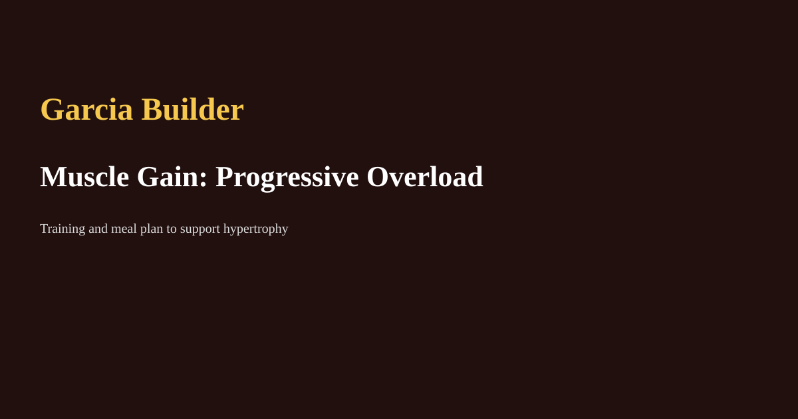

Muscle Gain — Progressive Overload Plan
By Andre Julio Garcia | June 2026

Programming basics
Hypertrophy responds to tension, volume, and progressive overload. Aim for 8–20 sets per muscle group per week, adjusted by experience.
Progressive overload methods
Increase weight, reps, sets, or reduce rest over weeks. Track workouts and prioritize gradual increases to avoid injury.
Nutrition
Consume a small caloric surplus (200–400 kcal/day) with sufficient protein (1.6–2.2 g/kg). Prioritise whole foods and meal timing around training for performance.
Recovery & periodisation
Include deload weeks every 6–8 weeks and ensure sleep and stress management to support growth.
← Back to Blog